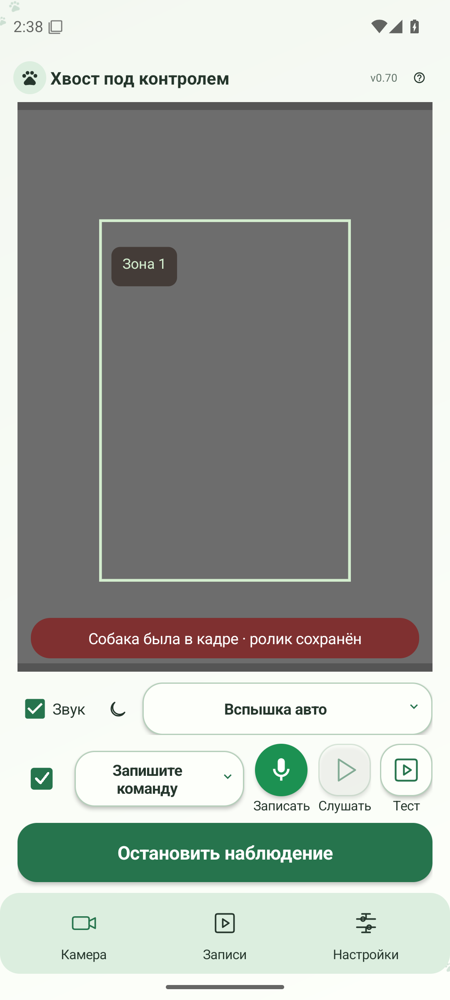
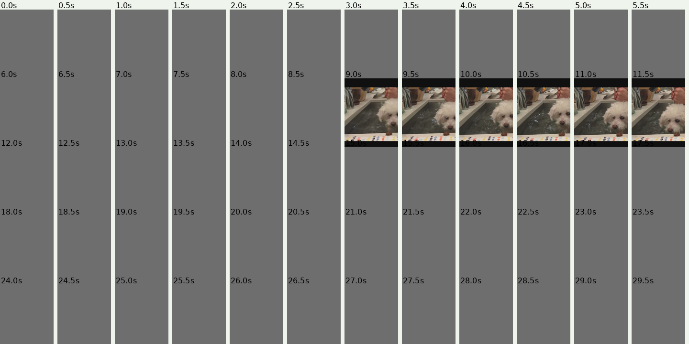

Проверка времени кадра на Android
Тест APK0.70 на Pixel6 API35 эмуляторе. Физический Samsung не подключён. Выбраны только Собаки.
- Подтверждения модели пришли через7,814 и12,684 секунды.
- Создан1ролик. Ошибок ANIMAL_HISTORY_MISSING:0.
- Часы кодировщика:REALTIME, смещение0. Данные SENSOR_TIMESTAMP не подменяют часы кодировщика.
- В сохранённом ролике29,8с содержится короткое появление движущегося пуделя, до и после — пустой кадр. Фаза человека началась после завершения ролика, дополнительного клипа не создала.
Это не проверка Samsung после длительного сна. Различие часов в таком случае проверено отдельными модульными тестами. Также начало ролика здесь раньше пяти секунд: около9с. Ровная обрезка до5с не реализована.
01 · Исходный сохранённый ролик
Скачать исходный MP4 · Время кадра, распознавания и сохранения · Результаты JSON
02 · Сообщение приложения после сохранения

03 · Содержимое всего ролика

Настоящее видео пуделя в воде, не пробег по комнате. Исходник Rhododendrites/Wikimedia Commons, CC BY-SA4.0. Источник и лицензия. Частные пользовательские видео и отчёты Samsung здесь не опубликованы.